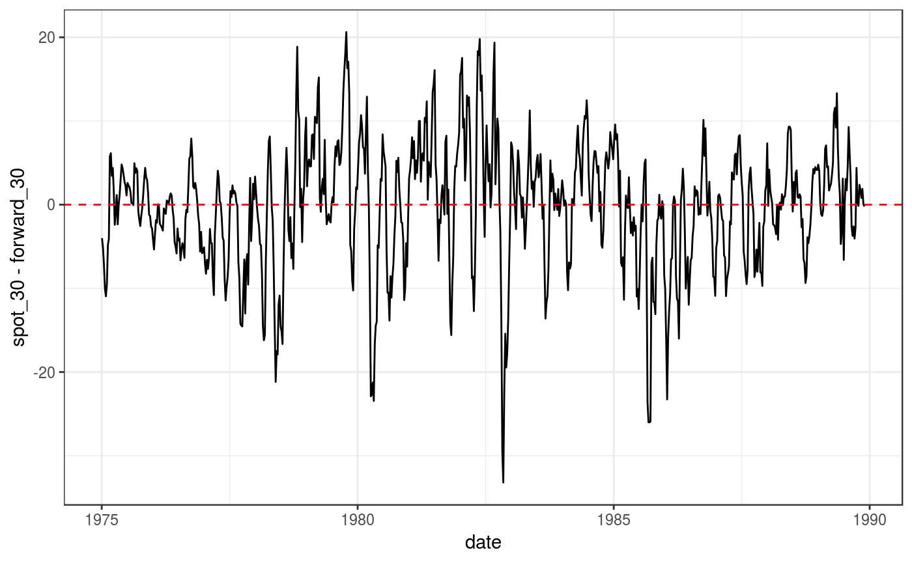
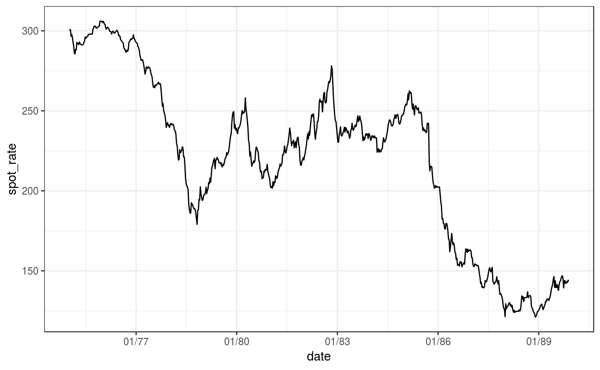
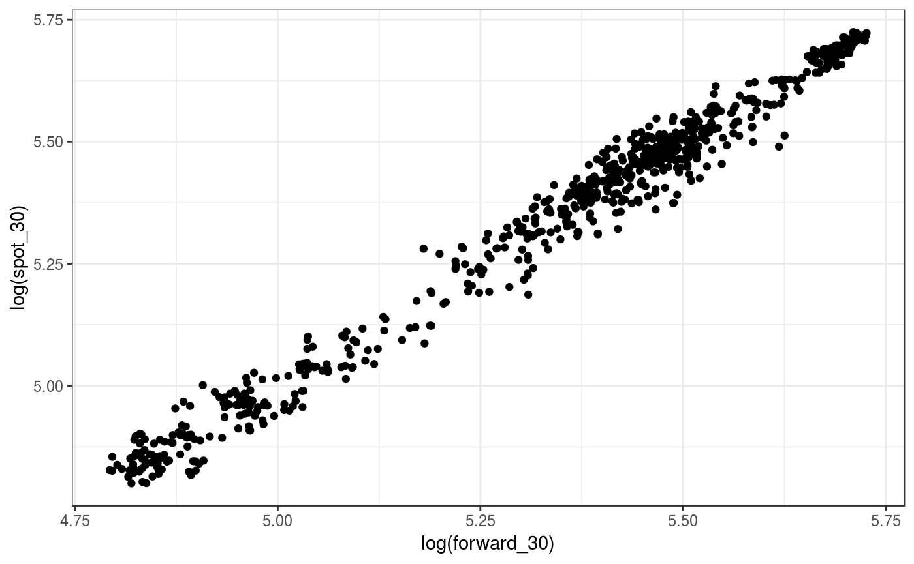
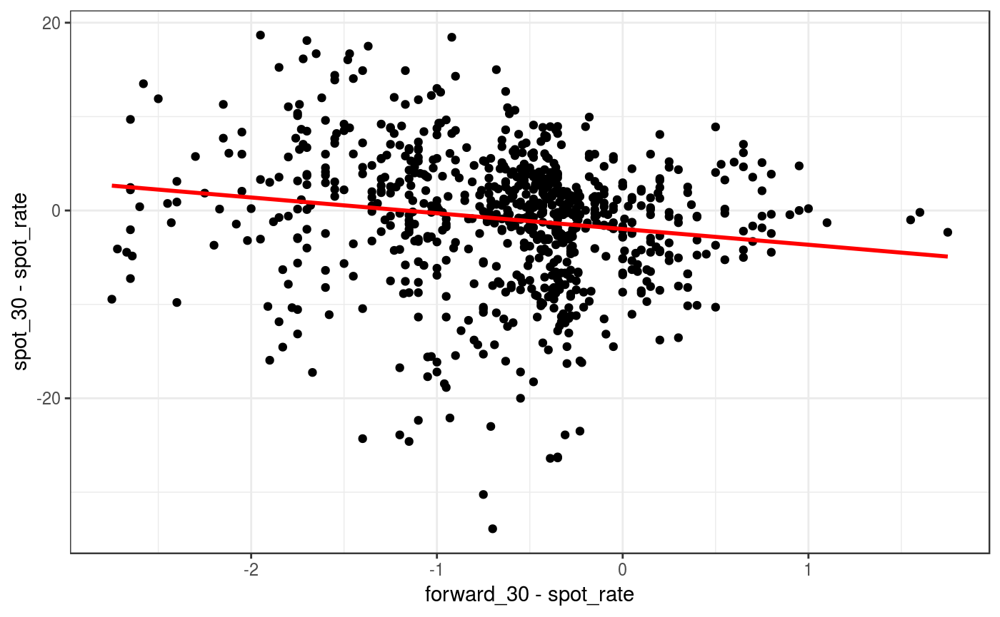

Chapter 06: Serial Correlation
Lachlan Deer
2019-02-28
Source:vignettes/chapter-06.Rmd
chapter-06.RmdApplication: Forward Exchange Rates as Optimal Predictors
Load the hayashir package
library(hayashir)And other libraries we need for this chapter
library(dplyr) # data manipulation
#>
#> Attaching package: 'dplyr'
#> The following objects are masked from 'package:stats':
#>
#> filter, lag
#> The following objects are masked from 'package:base':
#>
#> intersect, setdiff, setequal, union
library(ggplot2) # plotting
library(forecast) # time series plotting - Acf
library(sandwich) # HAC standard errors
library(lmtest)
#> Loading required package: zoo
#>
#> Attaching package: 'zoo'
#> The following objects are masked from 'package:base':
#>
#> as.Date, as.Date.numeric
#>
#> Attaching package: 'lmtest'
#> The following object is masked from 'package:hayashir':
#>
#> moneydemand
library(car)
#> Loading required package: carData
#>
#> Attaching package: 'car'
#> The following object is masked from 'package:dplyr':
#>
#> recodeThe Data
Let’s get a quick look at our data by looking at the first 10 rows:
head(yen, 10)
#> # A tibble: 10 x 4
#> date spot_rate forward_30 spot_30
#> <date> <dbl> <dbl> <dbl>
#> 1 1975-01-03 301. 301. 297.
#> 2 1975-01-10 301. 301. 295.
#> 3 1975-01-17 301. 300. 293.
#> 4 1975-01-24 296. 296. 286.
#> 5 1975-01-31 298. 298. 287.
#> 6 1975-02-07 296. 296. 286.
#> 7 1975-02-14 293. 293. 288.
#> 8 1975-02-21 291. 292. 288.
#> 9 1975-02-28 286. 286. 291.
#> 10 1975-03-07 286. 285. 292.Figure 6.1: Forecast Error: Yen/Dollar
ggplot(data = yen, aes(x = date, y = spot_30 - forward_30))+
geom_line() +
geom_hline(yintercept = 0, linetype="dashed", color = "red") +
theme_bw()
Figure 6.2: Correlogram of \(s30 - f\), Yen/Dollar
The Acf function from the forecast package will do what we need here:
Acf(yen$spot_30 - yen$forward_30, lag.max = 40)
Figure 6.3: Yen/Dollar Spot Rate, Jan 1975 - Dec 1989
ggplot(data = yen, aes(x = date, y = spot_rate))+
geom_line() +
scale_x_date(date_breaks = "3 years", date_labels = "%m/%y") +
theme_bw()
Figure 6.4: Plot of \(s30\) against \(f\), Yen/Dollar
ggplot(data = yen, aes(x = log(forward_30), y = log(spot_30)))+
geom_point() +
theme_bw()
Table 6.2: Regression Tests for Market Efficiency
For the Yen/Dollar:
mkt_eff <- lm (I(spot_30 - spot_rate) ~ I(forward_30 - spot_rate), data = yen)
summary(mkt_eff)
#>
#> Call:
#> lm(formula = I(spot_30 - spot_rate) ~ I(forward_30 - spot_rate),
#> data = yen)
#>
#> Residuals:
#> Min 1Q Median 3Q Max
#> -33.105 -3.554 1.084 4.508 18.876
#>
#> Coefficients:
#> Estimate Std. Error t value Pr(>|t|)
#> (Intercept) -1.9700 0.3507 -5.618 2.70e-08 ***
#> I(forward_30 - spot_rate) -1.6783 0.3720 -4.512 7.42e-06 ***
#> ---
#> Signif. codes: 0 '***' 0.001 '**' 0.01 '*' 0.05 '.' 0.1 ' ' 1
#>
#> Residual standard error: 7.21 on 776 degrees of freedom
#> Multiple R-squared: 0.02556, Adjusted R-squared: 0.02431
#> F-statistic: 20.36 on 1 and 776 DF, p-value: 7.424e-06These results give standard errors under the assumption of heteroskedasticity. To correct for heteroskedasticity and autocorrelation we want HAC standard errors from the sandwich package. In particular standard errors with a maximum of 4 lags that are not pre-whitened. To get a summary of the regression we use the coeftest function from the lm package
coeftest(mkt_eff, vcov = vcovHAC(mkt_eff, lag = 4, prewhite = FALSE))
#>
#> t test of coefficients:
#>
#> Estimate Std. Error t value Pr(>|t|)
#> (Intercept) -1.96996 0.70083 -2.8109 0.005065 **
#> I(forward_30 - spot_rate) -1.67835 0.68199 -2.4610 0.014073 *
#> ---
#> Signif. codes: 0 '***' 0.001 '**' 0.01 '*' 0.05 '.' 0.1 ' ' 1To test that \(\beta_0 =0\) and \(\beta_1 = 1\) we use the linearHypothesis function from car
linearHypothesis(mkt_eff, c("(Intercept) = 0", "I(forward_30 - spot_rate) = 1"),
vcov = vcovHAC(mkt_eff, lag = 4, prewhite = FALSE))
#> Linear hypothesis test
#>
#> Hypothesis:
#> (Intercept) = 0
#> I(forward_30 - spot_rate) = 1
#>
#> Model 1: restricted model
#> Model 2: I(spot_30 - spot_rate) ~ I(forward_30 - spot_rate)
#>
#> Note: Coefficient covariance matrix supplied.
#>
#> Res.Df Df F Pr(>F)
#> 1 778
#> 2 776 2 8.1846 0.0003037 ***
#> ---
#> Signif. codes: 0 '***' 0.001 '**' 0.01 '*' 0.05 '.' 0.1 ' ' 1Figure 6.5: Plot of \(s30-s\) against \(f - s\), Yen/Dollar
ggplot(data = yen, aes(x = forward_30 - spot_rate, y = spot_30 - spot_rate))+
geom_point() +
geom_smooth(method = "lm", se = FALSE, color = "red") +
theme_bw()